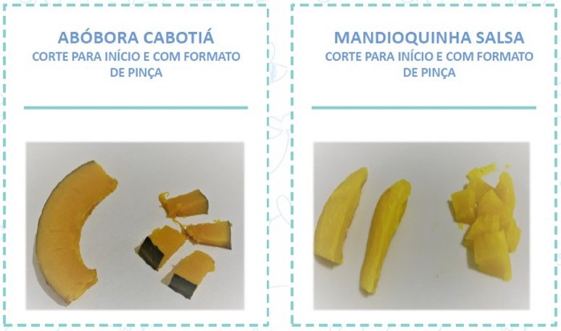

Introdução Alimentar sem SegredosMódulo 3 · Segurança
33

Como ler os cartões
“Corte para início” é o bastão que o bebê
segura com a mão inteira, a partir dos 6 meses. “Formato de pinça” são os pedaços
pequenos, oferecidos por volta dos 9 meses, quando o bebê desenvolve o movimento de
pinça com os dedos.